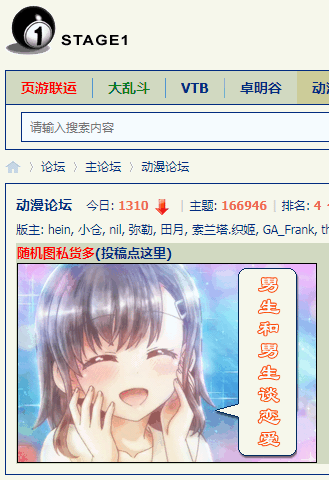

2020-06-09 06:00
上网乱转几圈，没发现什么重要情报，无论是非政府组织「高学历精英无国界」、政府组织「全世界色目人联合起来」还是奥林匹斯山祭司委员会肃慎分会，都不约而同保持沉默。看来幕后黑手下达了「封口令」：闭嘴，或者大手情报机构履行岗位职责。
那么继续深化前一篇当中提到的剧情线索，就从「震惊中外の乒乓外交」开始不惮以最大的恶意揣测大手情报机构在幽州城呼风唤雨的全过程。
先摘抄公开资料，一个关键时间、关键地点出现的关键人物：
庄则栋（1940年8月25日-2013年2月10日），中国男子乒乓球运动员，生于江苏省扬州市，自幼喜爱乒乓球运动，14岁加入北京市少年宫业余体校乒乓球小组，1957年，入选北京市乒乓球队，同年参加全国比赛。
1959年，入选中国青年乒乓球队；庄则栋曾获得第26-28届世乒赛男子单打冠军，是二十世纪六七十年代中国男子乒乓球队主力队员之一。1971年4月，在日本名古屋参加第31届世乒赛期间，冒着风险，结交美国运动员Glenn Cowan，打开了中美两国友好的大门，开启乒乓外交。曾任国家体委主任，中共十届中央委员，第三、四届全国人大代表。
当年「外交风云」详细过程网上都有，刨除那些吟游诗人哗众取宠口沫横飞渲染的耸人听闻情节，只看事实。在奥林匹斯山祭司委员会管辖范围之外，在国际乒联和日本方面邀请之下，获得大救星批准的兲朝代表团才会应邀参加名古屋世乒赛。
再看碰头细节，是花旗国乒乓球运动员科恩主动搭错车，庄则栋则主动迎宾并赠送印有黄山图案的杭州织锦，然后跑得比谁都要快的记者及时抓拍并炮制「Breaking News」并在各种媒体首页今日头条位置醒目应景推荐。第二天科恩准备了印有和平标记与Let It Be
文字的运动衫守株待兔并回赠，然后接受跑得比谁都要快的记者采访表示惦记着「进入」中国。
后面发生的事情人民群众都知道了，包括但不限于1971年7月9日花旗国基辛格秘密访华，1971年9月13日「震惊中外の冚家富贵」，1972年2月21日花旗国尼克松大统领公开访华。
再摘抄公开资料，关键人物身边的另外一个关键人物：
佐佐木敦子，1944年生于沈阳，毕业于兰州某高中，曾任兰州第一毛纺厂工人，1962年其父因直肠癌去世，1967年返回原籍日本岛根县。
不知道这二十三年之间，是否有「身份证」「户口本」，是否以「少数民族」身份享受「两少一宽」政治待遇。
1987年，佐佐木敦子为嫁庄则栋，被迫放弃日本国籍，移民北京。但是当时中国还不开放，与庄则栋恋爱的佐佐木敦子被限期离境，中国驻东京大使馆不给佐佐木敦子签证。
北京不给庄则栋发护照，不许庄则栋出国。他们冒死上书要求结婚，经过书记处、政治局、王震、胡耀邦……最终邓小平批准，才得以成婚。最终佐佐木敦子自愿放弃日本国籍，当中国人，移民北京。
当然还有后续报道：《庄则栋墓碑被喷黑漆，日籍遗孀重新修饰（图）》
仅看这些缩写的大事记，就已经可以嗅到阴谋诡计的气息，最起码几个疑点都能看出来。比方说庄则栋「我一个扬州人，怎么代表了幽州呢」但是武德充沛贺龙元帅领导的国家体委（1952年11月-1969年6月）并没有「另请高明」。
再看当代「内政风云」，在蔡奇书记领导下的国际一流和谐宜居之都，目前居住着一位江苏无锡人蔡振华，1978年至1985年，为国家青年乒乓球队、国家乒乓球队运动员；2007年4月至2018年7月，任国家体育总局副局长、党组成员；现任中华全国总工会副主席、书记处书记、党组成员，十七届、十八届中央候补委员。
到这里差不多体育与武德的关系已经很明显了，乃至「高俅」「高衙内」在国际一流和谐宜居之都横行霸道为非作歹还能指使公检法炮制冤假错案并有大手情报机构背书，幽州城内群魔乱舞暗无天日的现状，都可以上溯到「端王轻佻，不可以君天下」的历史转折点。
2020-06-09 21:30
先看时事新闻当中的情报：
07:13:52【朝鲜宣布：9日12时起彻底切断一切朝韩通讯联络线】据朝中社9日报道，朝方有关部门从当地时间2020年6月9日12时开始彻底断绝并废除通过朝韩共同联络办公室一直维持的朝韩通讯联络线、朝韩军方之间的东西海通讯联络线、朝韩通讯试验联络线、朝鲜劳动党中央本部大楼和青瓦台之间的热线通讯联络线。（央视新闻）
17:20:37【伊朗司法机构：伊斯兰革命卫队“圣城旅”指挥官苏莱马尼行踪泄密者将被判处死刑】据当地多家媒体9日报道，伊朗司法机构发言人埃斯梅利表示，苏莱马尼将军行踪的泄密者被判处死刑，将很快被处决。报道称，名为马哈穆德·穆萨维·马吉德的泄密者曾经搜集苏莱马尼将军所在地的数据并将其提供给外国人。埃斯梅利表示，该人与以色列摩萨德、美国中央情报局都有联系，并为这些机构提供有关安全和军事的情报，包括革命卫队“圣城旅”及苏莱马尼将军的有关情报。（央视新闻）
很明显有「大手情报机构在行动」的气息，还得结合市面上其它色目情报掮客多年来不打自招爆料泄漏的国家机密兼宇宙奥秘理解。
简单说，各大宣传阵地当中「与时俱进流」文艺爱好者曾经嘲笑过冷战题材影视剧，说「图纸」的计量单位不是「张」而是「吨」，哪怕用「微缩胶卷」拍下来也塞不进雨伞柄里，即便是科技昌明民智大开的当代，接触到国家机密兼宇宙奥秘之后，存储设备的体积需要用「集装箱」单位，因此最简单的方式是保持一条数据链路源源不断的传输。
而在九省通衢の煎蛋等地，娱乐至死の色目逗哔宣扬北棒金三胖「死肥宅只想和平的打游戏」相关无聊图极大充沛，还有各种steam/epic之类数据为证，说平壤「白头山血统专用服务器」流量如何充沛，以及经常登录汉城「跨服聊天对喷」，棒语我看不懂，还是色目情报掮客主动提供汉译的。至于最近花旗各大互联网站点封锁伊朗帐号，更是应景。
也就是说，「互联网无国界」是一把双刃剑，数据双向流动。从发达国家向发展中国家流动的，就是伪装成动辄1TB下载安装的游戏本体以及DLC之类的国家机密兼宇宙奥秘；而从发展中国家向发达国家流动的，则是各种党和国家领导人行踪。
甭跟我说防火长城如何伟大光荣正确，只言片语联络消息当然可以筛查追踪，而加密压缩过的各种游戏数据，包括但不限于视频音频图像以及场景人物建模细节，在动辄叫嚣大手通信会社硬件实力强大尽量降低网络延迟保证玩家实时响应的前提下还能查出来就怪了。对策只有两种，或者拔网线，或者（按照娱乐至死の色目逗哔原话）躺倒掰开哎姆腿闭上眼睛享受。
总之，在幕后黑手的如意算盘当中，应该有个「震惊中外の游戏外交」场景，说水火不容的两个阵营当中各有一位鸡巴尊贵的龙裔，因为「互联网无国界」的缘故，在什么娱乐阵地当中匿名「相见相恋相知相思」并相约在耶路撒冷圣殿山结为同性伴侣，然后因为「朕即国家，我就是大局」家务事决定公务事，于是底下一帮膝盖生根头顶绿得发黑贱到骨子里去了的奴才毫不含糊的把最高指示贯彻落实到基层，从而实现了「键盘鼠标推动飞机导弹」改变了啥政治和意识形态斗争局势。
多么政治正确并且切合当代擅长用大拇指搓手机的与时俱进童年才俊口味的神转折骚操作呵！
让我们拭目以待！
补充最新消息：
按照活跃在国际化大都市「华语第一精日论坛」的女权主义者兼耽美爱好者的一贯表现①，不惮以最大的恶意揣测，棒半岛局势急转直下可能有个娱乐至死的原因。
简单说，为了贯彻落实「生产力决定生产关系，经济基础决定上层建筑，社会存在决定社会意识，下半身决定上半身，家务事决定公务事」的指导原则以及「受国之垢，是为社稷主；受国之不祥，是为天下王」的家学渊源，为了「三星の未来」，大野家龙裔决定「和亲」。
但是北棒金三胖的老婆唤作李雪主，人民群众认为亲已经和过了，但是该打还打该骂还骂，与我中华兲朝上国尤其是虽远必诛の强汉「计拙是和亲，安危托妇人」历史教训没有任何区别。于是凌烟阁元老们眉头一皱计上心来，再和一遍就是了。
所以与北棒联络过之后，金三胖决定休妻另娶，文在寅负责背锅逮捕李在镕，暗地里送到北棒去……然后北棒落后反动腐朽的保守势力不乐意了，认为「在耶路撒冷圣殿山结为同性伴侣」这种事，不是嘉话而是丑闻，所以发动了「政变」，和亲人选换了一个。
是为新编革命历史剧《兄妹易嫁》者也。
- ①